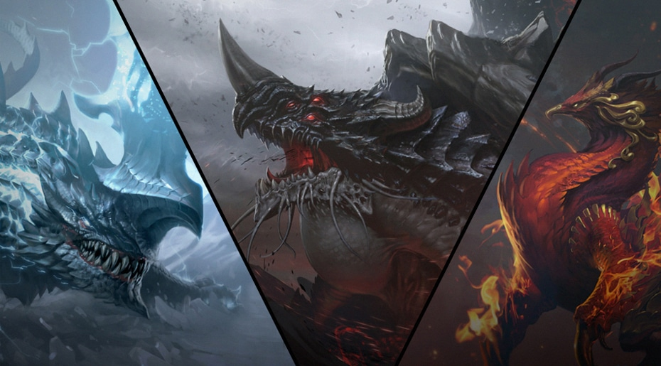

오랜 시간 아크의 힘을 탐냈던 이그하람은 이 때를 놓치지 않았다. 그는 페트라니아에서 자라난 어둠의 생명체, 그리고 ‘태초부터 존재한 자들’과 함께 질서의 세계 아크라시아를 침공했다. 신들과 아크라시아의 종족들은 이들에 맞서 싸웠다. 하지만 전쟁의 여파는 전혀 예상치 못한 결과를 불러들였다. 태초의 힘이 부딪히자 두 세계의 균열이 더욱 커지면서 대우주 오르페우스가 페트라니아를 집어 삼키기 시작한 것이다. 모든 세계가 무(無)로 돌아가며 혼돈마저 잠식하기 시작하자 이그하람은 전쟁을 중단했다. 균열을 막기 위해 아크라시아의 일곱 신들은 각자의 아크를 루페온에게 바쳤고, 루페온은 아크의 힘을 개방했다. 이 태초의 힘은 이그하람이 가진 혼돈과 결합하여 ‘가디언’을 만들어냈다.
